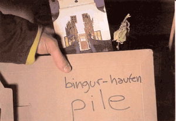
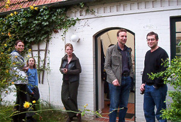
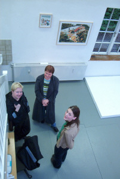
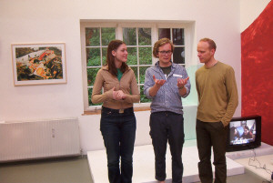
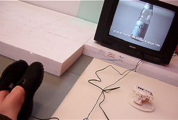
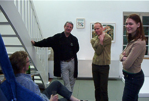
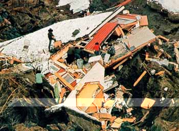
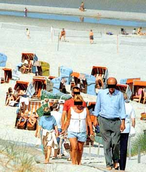

|
|

BINGUR - HAUFEN - PILE
ist ein Ausstellungsprojekt des isländischen Künstlers Hlynur Hallsson, der zurzeit als Stipendiat der Künstlerhäuser Worpswede auf dem Barkenhoff arbeitet. Während seines Aufenthaltes hier lädt er insgesamt 8 internationale Künstler - jeweils 2 zur gleichen Zeit - ein, in seinem Atelier eine Arbeit zu realisieren. Die Arbeiten verbleiben dann im Atelier, sodass die folgenden Künstler darauf aufbauen bzw. reagieren können. Untereinander kennen sich diese Künstler noch nicht, alle arbeiten jedoch konzeptuell in je unterschiedlicher Art und Weise. Die Idee des Projektes ist, dass die Künstler sowohl mit ihren Arbeiten als auch persönlich einen Dialog führen können. bingur – haufen – pile beginnt mit der Ausstellungseröffnung am Samstag, den 9.3. um 16.00 Uhr und läuft bis Ende Juni.
Projekt von Hlynur Hallsson in Zusammenarbeit mit den Künstlerhäusern Worpswede
|
Eröffnung am Samstag, 9. März um 16 Uhr
Opening on saturday, march 9th. 2002 at 16.00
Rolf Bier (Berlin/Hannover) + Eva Maria Kollischan (Münster)
Eröffnung am Samstag, 27. April um 16 Uhr
Opening on saturday, april 27th. 2002 at 16.00
Kaj Nyborg (København) + Silke Wagner (Frankfurt a. M.)
Eröffnung am Samstag, 11. Mai um 16 Uhr
Opening on saturday, may11th. 2002 at 16.00
Laura Horelli (Helsinki/Berlin) + Matten Vogel (Berlin)
Eröffnung am Samstag, 15. Juni um 16 Uhr
Opening on saturday, june 15th. 2002 at 16.00
James Carl (Toronto) + Gunnhildur Hauksdóttir (Reykjavík)
Geöffnet ist die Ausstellung nach Vereinbarung
Hlynur Hallsson Tel. 04792 2816 hallsson@gmx.net
Barkenhoff - Atelier 4
Ostendorfer Str. 10
D-27726 Worpswede
Tel: +49 (0)4792 2816
E-mail: hallsson@gmx.net
|
|
|
|
|  |
 |
 |
 |
|
|
ROLF BIER
*1960 in Würzburg, lives and works in Hannover and Berlin
Education / study visits
1980-87 Hochschule für Bildende Künste in Braunschweig
1987 Chelsea School of Art London
1994 Cité Internationale des Arts Paris
1995 Villa Massimo Rom
1996 Otto-Dix-Preis Gera
2001 Stipendium des Kunstfonds e.V. Bonn
Einzelausstellungen (Auswahl) - Selected Solo Exhibitions
2002 „Die andere Seite“, Kunstmuseum Heidenheim
2001 „miracle deposit“, Kunstverein Friedrichshafen
2000 „Aufmaß am Netz“ Zehntschaune Freden
1999 „nonstop carriers/Budapest replica“, Galerie Knoll, Budapest
„Kristallzimmer“, Galerie Klaus Fischer und Runge, Berlin
„Relational Panorama“, Kunstverein Hannover
1998 „Skulpturen“, Junge Kunst e.V., Wolfsburg
„Vier Stücke für eine Wohnung“, Kunstraum Wohnraum, Hannover
„nonstop carriers“, Skulpturen, Galerie Hans Knoll, Wien
1996 „Spielraum und Siedlung“, Galerie Duppel, Stuttgart
Kunstverein Braunschweig
Gruppenausstellungen (Auswahl) - Selected Group Exhibitions
2002 „Ding“, Galerie Eugen Lendl, Graz
2001 „Fotografierte Bilder“, Museum Bochum
„Milano - Europa 2001“, Palazzo della Triennale, Milano
2000 „Happy birthday Johannes“, Gutenbergpavillion Mainz
1999 „Zusammenhängen“, Galerie Klaus Fischer, Berlin
„S/W und Farbe - Fotografien“, Museum Bochum
1998 „Skulpturen“, Prima Kunst, Kiel
1997 „Was ist“ Zeughaus Wismar, Kunsthalle Rostock
1996 „Wiedersehen“, Kunstverein Hannover
„Fishing for shapes?“, Projektraum, Hannover und Künstlerhaus Bethanien, Berlin
|
|
EVA-MARIA KOLLISCHAN
*1966 in Nürnberg, lives and works in Münster
Education / study visits
1988-89 Kommunikationsdesign, FH-Nürnberg, Diplom
1993-98 Freie Kunst, Kunstakademie München und Kunstakademie Münster bei Ulrich Erben
1998 Meisterschüler
1999 Reisestipendium, Stockholm
2000 Arbeitsstipendium der Stiftung Kunst und Kultur NRW
seit 1999 Mitarbeit im Förderverein Aktuelle Kunst, Münster
seit 2001 Lehrauftrag am Institut für Kunstpädagogik, Goethe-Universität Frankfurt
Einzelausstellungen (Auswahl) - Selected Solo Exhibitions
2001 "Symbolfoto", Theaterfoyer, Münster
2000 "eine Tür, die sich von alleine öffnet, ab und zu", Münster. Licht-Installation, VIP-Lounge, der DSGV-Finanzgruppe, EXPO 2000, Hannover
1999 "New York City", Cuba-Foyer, Münster
1996 "ICH WEIß WOHL", Pavillon der Galerie Annelie Brusten, Wuppertal
Gruppenausstellungen (Auswahl) - Selected Group Exhibitions
2001 "sol over Dejbjerg", Skjern-Egvad Museum, Dänemark
"believe", Westfälischer Kunstverein, Münster
"Stille", Künstlerhaus Dortmund
1995 Galerie Münsterland, Emsdetten (K)
2000 "Schnitt 2000", Kunstverein Düsseldorf (K)
Kulturserver/home/Einkaufspassage, Hannover
"Puddels", Tokyo, Aomori, NRW " Austauschprojekt mit Japan
1999 "Lichteinfall", Simultanhalle, Köln
1998 "Meisterschüler in westfälischen Schlössern", Schloss Brake, Lemgo
1997 "Ida-Gerhardi-Preis" "Ausstellung, Städt. Galerie Lüdenscheid
"Wasser im Garten und auf dem Balkon", Prima Kunst, Kiel
"OUTPOST", Stadtraum Münster (K)
1996 "unterwegs", Kunstverein Krefeld
"Transparenzen", Produzentengalerie, Kassel
|
|
SILKE WAGNER
*1968, works and lives in Frankfurt a. M.
Selected Solo Exhibitions - Einzelausstellungen (Auswahl)
2001 Meyer Riegger Galerie, Karlsruhe
"Volxhochschule", mit Meike Schmidt-Gleim und Marius Babias, Salzburger Kunstverein, Salzburg
1999 "Drehbücher", Galerie Meyer Riegger, Karlsruhe
1998 "7 Vorträge, ein Bild, ein Auditorium", Ausstellungsraum der Universitätsbibliothek Frankfurt
Selected Group Exhibitions - Gruppenausstellungen (Auswahl)
2001 "Plug-In. Einheit und Mobilität", Westfälisches Landesmuseum Münster
"Angst", Kokerei Zollverein Zeitgenössische Kunst und Kritik, Essen
"Frankfurter Positionen", Frankfurt
2000 "Flexibilitätsversuche", Museum Fridericianum, Kassel
1999 "HOME & AWAY", Kunstverein Hannover
"German Open", Kunstmuseum Wolfsburg
|
|
KAJ NYBORG
*1963 in Aalborg, lives and works in Copenhagen
Education / study visits
1988-90 Kunstakadamie Düsseldorf / Studies by Proff. Gotthard Graubner / DAAD- stipendium
1982-87 School of Arts and Crafts, Kolding, Denmark
1995-96 Schloss Ringenberg ATELIERZENTRUM, Hamminkeln, Germany
Einzelausstellungen (Auswahl) - Selected Solo Exhibitions
2001 sight / site - skulptural hybrid Nygaardsvej 22, Copenhagen
Museum of Contemporary Art, / installation "CUT", Roskilde (DK)
2000 Galleri Søren Houmann / installation "SAD OWLS GO INTO FREEFALL", Copenhagen
GUK-Exhibition Place / Selfoss (IS), Lejre (DK), Hannover
WINDOW SPACE, Installation "Sleep out - Sleep in", Copenhagen
1999 Galleri Søren Houmann / Installation "Isolat", Copenhagen
1998 North-Udstillingssted / Installation "subterranean panorama", Copenhagen
1997 Stalke Galleri / Installation "U.T.", Copenhagen
Horsens Kunstmuseum / "WHITE NOISE", Horsen (DK)
Gruppenausstellungen (Auswahl) - Selected Group Exhibitions
2002 STALKE GALLERY, Copenhagen
2001 CAMP, Lejre (DK)
2000 North-Udstillingssted / "Picture this", fotografi, Copenhagen
Galleri Søren Houmann / SCRATCH, Copenhagen
1999 North-Udstillingssted / "Originaler", Copenhagen
24h deluxe / room veronique hubert - Hotel Scribe, Paris (F)
1998 Stalke Galleri / 1987-1997 - Jacobi, Eliasson, Heinzmann, Koch, Strøm, Pernice
1997 OVERGADEN / "PINPOINT" - Franke, Zoderer, Saffer, Bernardini, Copenhagen
Nikolaj Kirke / "Tryk til tiden", arr. Den Danske Radeerforening, Copenhagen
1996 Charlottenborgs Efterårsudstilling, Copenhagen
1995 Stalke Galleri / "Status 1", Copenhagen
|
|
MATTEN VOGEL
*1965 in Hannover, lives and works in Berlin
1994 Meisterschüler HdK Berlin
Einzelausstellungen (Auswahl) - Selected Solo Exhibitions
2002 „zensiert von...“, Kuckei + Kuckei, Berlin
2000 „Matten Vogel“, Junge Kunst e.V., Wolfsburg
“Sicherheitskonzept“, Kuckei + Kuckei, Berlin
Gruppenausstellungen (Auswahl) - Selected Group Exhibitions
2002 „Berlin - neue Kunststadt“, Opera Paese, Rom
2001 „dem- nächst. de“, paul. Galerie, Bremerhaven
“8 Trienale Kleinplastik“, Fellbach
“Ein Treppenhaus für die Kunst“, Kulturministerium Hannover
“Landschaftsmalerei“, Landesmuseum Oldenburg
|
|
LAURA HORELLI
*1976 Helsinki, Finland, lives and works in Berlin, Frankfurt and Helsinki
1995-2000 Academy of Fine Arts Helsinki, Department of Time and Space
1997-2002 Städelschule, Frankfurt a.M., Klasse Thomas Bayrle
Grants
2001 Finnish Culture Fund, FRAME - Finnish Fund for Art Exchange, Finnish Arts Council
2000 Helsinki City Culture and Library Board,
FRAME - Finnish Fund for Art Exchange, AIAV Japan
Ausstellungen (Auswahl) - Selectad Exhibitions
2002 Germinations 13, Bialystok, Poland / Site Gallery, Sheffield, UK
2001 Galerie Barbara Weiss, Berlin / Neue Welt, Frankfurter Kunstverein, Frankfurt a.M.
Plateau of Mankind, La Biennale di Venezia, 49. Esposizione Internazionale d’Arte, Venice
Arbeit Essen Angst, Kokerei Zollverein, Essen
Frankfurter Positionen, a project in public spaces, BHF-Stiftung, Frankfurt a.M.
Ars01, Kiasma, Helsinki
2000 Artists-in-Residence, AIAV gallery, Yamaguchi, Japan
1999 Cities on the Move, Kiasma, Helsinki
1998 Stuttgart 17.7.1956 - Salem (Wis)
USA 3.3.1977, Portikus, Frankfurt a.M.
|
|
GUNNHILDUR HAUKSDÓTTIR
*1972 in Reykjavík, lives and works in Reykjavík, Iceland
1998-2001 The Icelandic Academy of the Arts, multimedia department. Reykjavik
1994-1998 Fjölbrautarskólinn í Breiðholti. Junior College, art line. Reykjavik
Einzelausstellungen (Auswahl) - Selected Solo Exhibitions
2002 Westside Reykjavik. Artist on the Corner. “Daughters of Earth”, Reykjavik
2001 Gallery Nema Hvað. „Naturechildren“, installation. Reykjavik
1999 Gallery Nema Hvað. "Conversation of love", with Ragnar Kjartansson, Reykjavik
Gruppenausstellungen (Auswahl) - Selected Group Exhibitions
2001 Skaftfell, Seyðisfjörður, (IS).
2001 Slunkaríki. The Battle of Good and Evil / "The Tiger and The Polar bear". Ísafjörður (IS)
Performances and Happenings
2002 Reykjavik Art Museum “Group Performance”, Reykjavik
2001 The Living Art museum. Performance and video: "A dog carrying rocks", Reykjavik
2000 Yellow House, happening; „Indian dance and a bonfire“, Reykjavik
Yellow House, IETM Conference. Performance, "The Haunted House" Reykjavik
|
|
JAMES CARL
*1960 in Montreal, lives in Toronto
1996 MFA, Rutgers University, New Jersey
1995 &1990 Diplomas, Central Academy of Fine Art, Beijing
1992 BA Honors, McGill University, Montreal
1983 BFA, University of Victoria, British Columbia
Neuliche Einzelausstellungen - Recent Solo Exhibitions
2002 Pathogen, Contemporary Art Gallery, Vancouver
1999 Work, Galerie Haus Schneider, Karlsruhe, Germany
1998 Galerie Clark, Montréal
Stock, Art Metropole, Toronto
1997 Fountain, Toronto Sculpture Garden, Toronto
1996 Still Life, Paul Petro, Toronto
Out of Service, Civic Square, New Brunswick, NJ
Gruppenausstellungen (Auswahl) - Selected Group Exhibitions
2002 Provisional Worlds, Art Gallery of Ontario, Toronto
2001 Promises, Contemporary Art Gallery, Vancouver
Forever, Embassy of Canada, Beijing
First Light, Bellevue Art Museum, WA
2000 Minmal Pop, Traywick Gallery, Berkeley,CA
Minutia, SECCA, North Carolina
Climbing the Walls, Robert Birch Gallery, Toronto
1999 New Urban Sculpture, New York Public Art Fund Commission
Spatial Interest, Workspace, New York
Summit, Galerie 5020, Salzburg
Eitthvað - Etwas - Something, Kunstverein Hannover
I'm the Boss of Myself, Sara Meltzer, New York
1997 Wrong Place, Right Time, Double Pleasure, New York
Face Value, PS 122, New York
Vague Pop Part One, View Room, New York
1996 Limousine, Free Parking, Toronto
MGSA Group Show, 420 West Broadway, New York
|
|